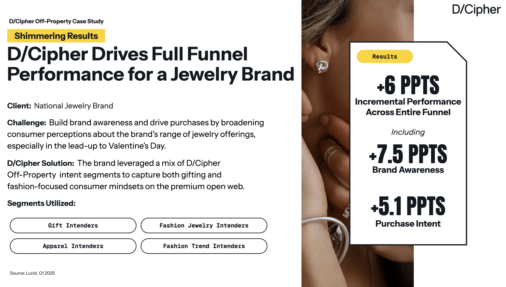
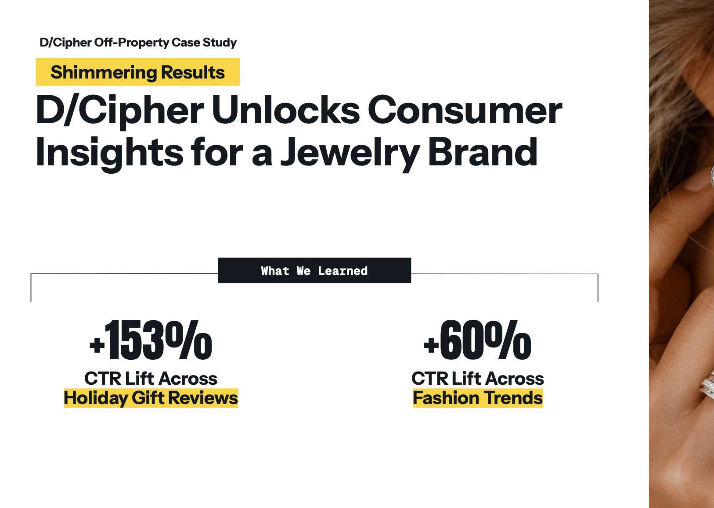

The first page connects the customer challenge and D/Cipher audience strategy to measurable gains across brand awareness, purchase intent, and the broader funnel.
People Inc. · Customer Storytelling + Product Marketing
I supported the development of public-facing customer stories for D/Cipher, helping turn campaign performance and audience insights into a clearer story about the product’s value.
the customer story

The first page connects the customer challenge and D/Cipher audience strategy to measurable gains across brand awareness, purchase intent, and the broader funnel.

The second page turns performance data into audience insight, showing where jewelry intenders were most engaged across gifting and fashion-related content.
01 · the challenge
The campaign had strong results, but the customer-facing story still needed to make the value of D/Cipher easy to understand. The goal was to connect the brand’s business challenge, audience strategy, and performance into one clear narrative.
02 · my role
I supported the development of the customer story by helping translate campaign performance and audience insights into concise, customer-facing messaging. The work brought together the business challenge, D/Cipher solution, audience segments, and results in a format that was easy to scan and understand.
03 · the story
The case study followed a simple arc. A national jewelry brand wanted to broaden perceptions of its product range ahead of Valentine’s Day. D/Cipher used gifting and fashion-focused intent segments to reach relevant audiences across the open web.
The results gave the story its proof points, including a 7.5-point lift in brand awareness, a 5.1-point lift in purchase intent, and a 6-point lift in incremental performance across the funnel.
04 · the insight
The performance data also showed where the audience was most engaged. Holiday gift reviews drove a 153% CTR lift, fashion-trend content drove a 60% lift, and awards-show content saw a 17% boost.
Those findings gave the customer story more depth by showing how intent signals could reveal the contexts and content themes that mattered most to consumers.
05 · why it mattered
The finished story made D/Cipher’s value more concrete by tying the product directly to a customer challenge, an audience strategy, and measurable outcomes. It gave the results a narrative that could be understood quickly without losing the detail behind them.
06 · what I learned
This project reinforced how customer evidence can make a product story stronger. Performance metrics become much more useful when people can understand what drove them and why they matter.